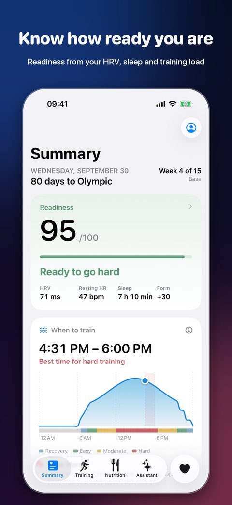
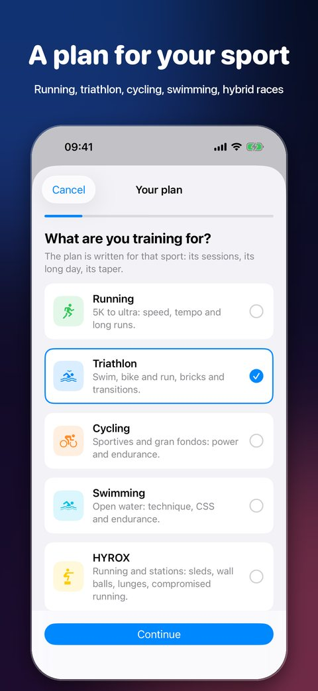
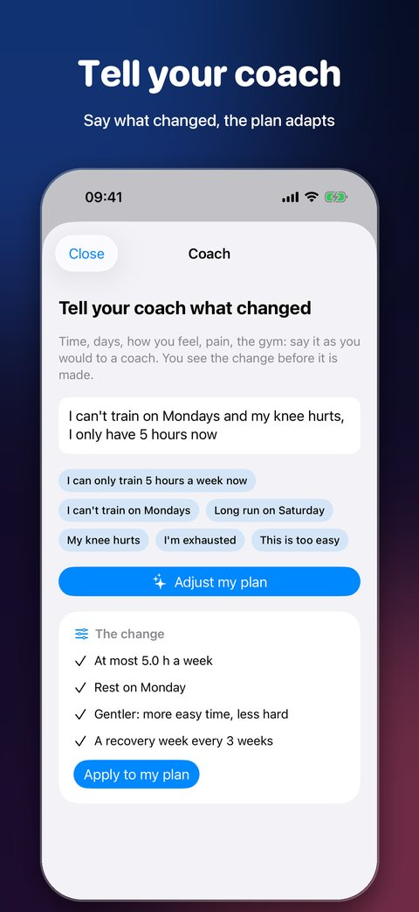
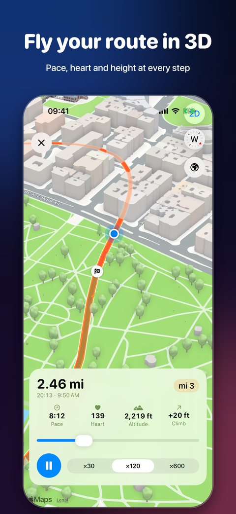
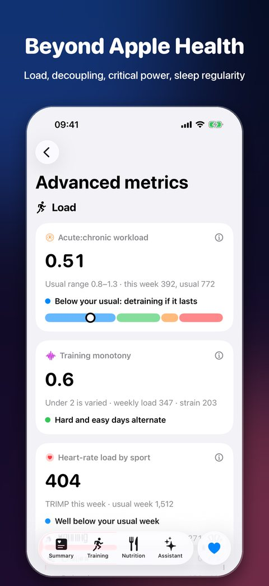
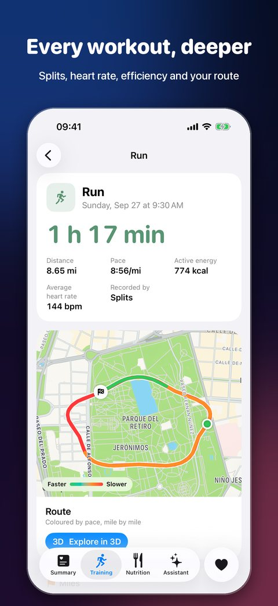
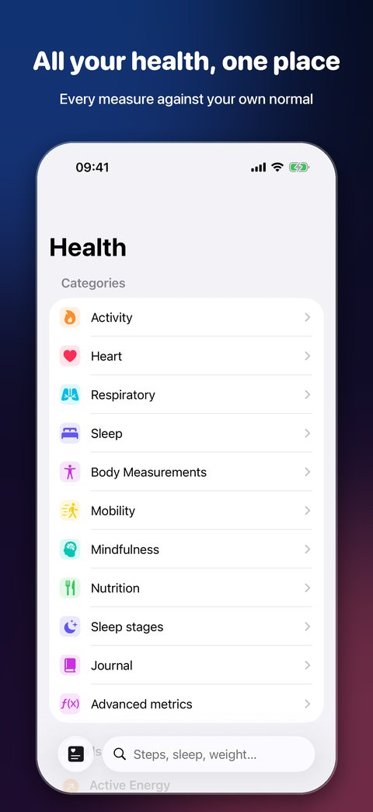

Train for your race. Recover like a pro.
Splits turns what your iPhone and Apple Watch already record into a plan that fits your week, and tells you each morning how hard to go.
Download on the App StoreMade for iPhone, iPad, Apple Watch, Mac — and the new iPhone Duo.







A plan for your sport
5K to ultra, triathlon, gran fondo, open water, hybrid fitness and obstacle races. A few questions, and a plan that starts from where you are.
Tell your coach
“Only five hours this week”, “my knee hurts”. Say it in your words; the plan shows the change before it makes it.
Ready or not
Heart rate variability, resting pulse, sleep and load against your own normal, every morning.
When to train
An hourly tide of the best time today for easy or hard work, from your sleep and body clock.
Beyond Apple Health
Decoupling, heart-rate recovery, critical power, intensity split, sleep regularity — each with its method.
Every workout, in 3D
Splits, heart rate and your route flown in 3D. Log your gym sets and weights in Splits, or import them from Strong, Hevy and other gym apps.
Splits Pro
Summary, readiness, your plan, race day, every workout and every Health measure are free. Pro adds the deep end.
- Advanced metrics
- The assistant (Apple Intelligence or your own AI key)
- A season of races
- Calendar and weather planning
- Routes in 3D
- Nutrition coach
Prices in euros; the App Store shows yours. Subscriptions renew until cancelled in your Apple Account settings.
Questions
Does it track VO2 max, zone 2 and HRV?
Yes. Splits reads VO2 max and heart rate variability from Apple Health, sets your zone 2 from your own thresholds, and compares each morning with your usual.
Can I use ChatGPT, Claude or Gemini as my coach?
Yes. Use your own key in the app, or copy a ready-made prompt with your age, size, zones, plan and recent training and paste it into any AI.
Do I need an Apple Watch?
No, but readiness and sleep need one at night. Workouts from any app that writes to Apple Health count.
Does it work for running only?
Yes. Pick running and a 5K, 10K, half, marathon, trail or ultra; the plan is written for running.
Where is my data?
In Apple Health and your private iCloud. There is no account and no server of ours.
Is it medical advice?
No. Splits is not a medical device and does not diagnose.